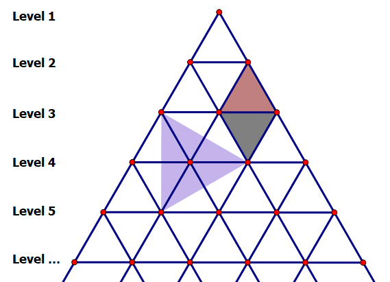

金字塔的侧表面可以表示成许多个等边三角形，并且可以将它们的顶点划分层次，使得第一层有一个顶点，第二层有两个，以此类推。

如上图所示，第 $k$ 层每两个相邻的顶点和某个位于第 $(k - 1)$ 层的顶点组成了一个正常放置的等边三角形，而这两个来自第 $k$ 层的顶点也能和某个位于第 $(k + 1)$ 层的顶点一起组成一个倒立放置的等边三角形。此外，来自三个不同层次的顶点也可能组成一个倾斜放置的等边三角形。
如果我们只考虑第 $l$ 层到第 $r$ 层的顶点，那么我们有多少种选择三个顶点组成等边三角形的方案呢？
输入包含多组测试数据。第一行包含一个整数 $T$，表示测试数据的组数。随后的内容是各组测试数据。对于每组测试数据：
仅一行，包含两个整数 $l$ 和 $r$。
对于每组测试数据，输出一行Case #x: y，其中x是测试数据的编号（从 $1$ 开始编号），y是这组数据的答案。
Case #x: y
x
y
3 1 3 2 4 3 5
Case #1: 5 Case #2: 12 Case #3: 20
 Comet OJ
Comet OJ